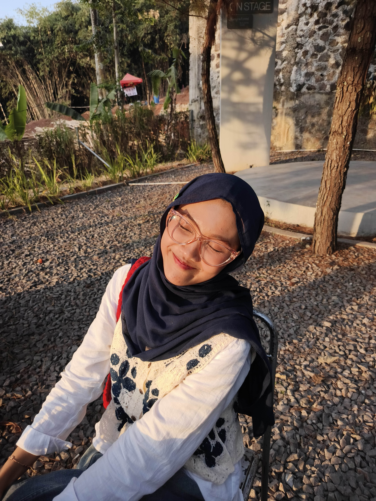

Halo, saya Sausan!
Saya adalah mahasiswa Teknik Informatika yang cukup mandiri dan dapat dipercaya. Saya termasuk orang yang mudah tertarik pada suatu hal dan biasanya akan terus melakukannya ketika sudah menyukainya.
Saya memilih Teknik Informatika karena tertarik dengan dunia teknologi dan melihat bidang ini memiliki prospek yang luas. Saat ini, saya masih terus mencari tahu bidang yang paling sesuai dengan diri saya.

Tentang Saya
Minat
Saya tertarik untuk terus mengeksplorasi dunia teknologi dan menemukan bidang yang paling sesuai dengan diri saya.
Fun Fact
Kalau sudah suka dengan suatu hal, saya bisa melakukannya berulang kali tanpa cepat bosan.
Kunjungi Dicoding untuk belajar lebih banyak tentang teknologi.
Mata Kuliah Semester Ini
| No | Mata Kuliah | SKS |
|---|---|---|
| 1 | Manajemen Basis Data & Praktikum | 3 |
| 2 | Jaringan Komputer & Praktikum | 3 |
| 3 | Pengembangan Aplikasi Mobile & Praktikum | 3 |
| 4 | Pengembangan Aplikasi Web & Praktikum | 3 |
| 5 | Interaksi Manusia dan Komputer | 3 |
| 6 | Intelegensia Buatan | 3 |
| 7 | Manajemen Proyek Perangkat Lunak | 3 |